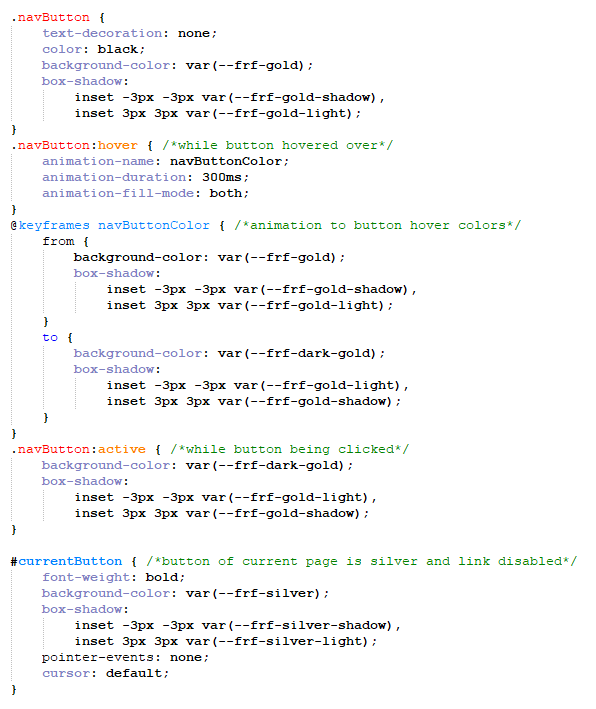
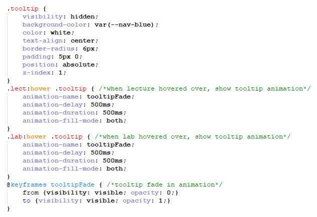

CSS Animations
Navigation Bar Animation
This website contains various CSS animations, including the navigation bar on every page:
When a clickable button is hovered over, a 300ms animation fades the color to a darker gold and flips the bevel colors (creating the impression of the bevel becoming embossed). The link for the current page appears in silver and is not clickable.
Class Timetable Tooltips Animation
The 'My Studies' page also has a CSS animation on the tooltips with additional information like class time and classroom:
Web Development - Lab
COS10005
10:30am-11:30am
BA 411
When the subject is hovered over, a 500ms delay is triggered followed by a 500ms animation fading the tooltip's opacity from 0 (transparent) to 1 (fully opaque), revealing it to the reader smoothly.
Full Screen Images
All Images can also be clicked on to view them full size, leading to the page image.html with a custom request in the URL, including the image file and the ref to the original page. A JavaScript file image.js reads the parameters from the URL and displays the correct image, and if a reference to the previous page is included, a "Go Back" link.
Try testing it out by clicking any of the photos on this (or any) page!